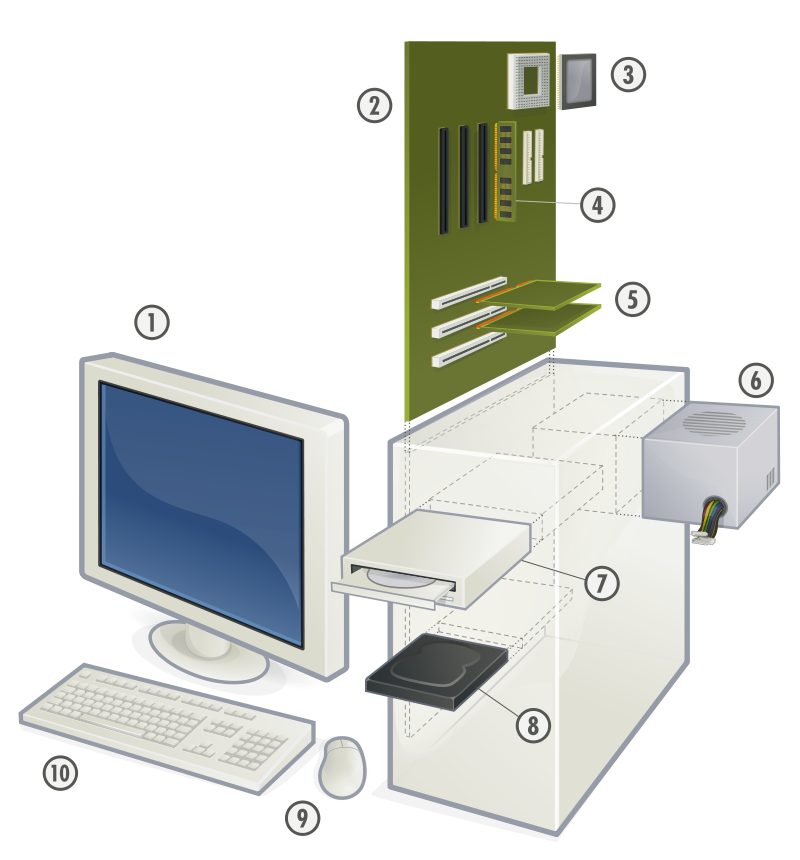

Budowa zestawu komputerowego
Obecnie komputery całkowicie zdominowały rynek sprzętu elektronicznego. Na tej stronie przedstawię dokładną budowę najbardziej znanego i rozpowszechnionego komputera - stacjonarnego.
Podstawowe elementy jednostki centralnej i zestawu komputerowego : 
- Monitor
- Płyta główna
- Procesor (CPU)
- Pamięć operacyjna RAM
- Karty rozszerzeń
- Zasilacz
- Napęd optyczny (CD, DVD itp.)
- Dysk twardy (HDD/SSD)
- Mysz
- Klawiatura
Źródło: Gustavb from Wikipedia, licencja CC BY 2.5.
Ogólnie komputer składa się z trzech podstawowych elementów : procesora, pamięci RAM oraz urządzeń wejścia/wyjścia. Proces działania komputera jest bardzo skomplikowany, dlatego przestawię go na rysunku w sposób bardzo uproszczony tj. jako dwa współpracujące urządzenia: pamięć operacyjna oraz procesor. Oba urządzenia znajdują się w jednej obudowie nazywanej jednostką centralną. Jednostka centralna posiada również zainstalowany system operacyjny (np. Microsoft Windows, Linux czy MacOS) oraz odpowiednie oprogramowanie.
Komputer = Jednostka Centalna + Urządzenia Zewnętrzne
Jednostka Centralna = Pamięć Operacyjna + Procesor
Źródło: Gustavb from Wikipedia ,licencja CC BY 2.5.
Wyróżniamy następujące grupy urządzeń peryferyjnych (zewnętrznych):
- urządzenia wejściowe (np. klawiatura, mysz, skaner, mikrofon, kamera internetowa),
- urządzenia wyjściowe (np. monitor, drukarka, głośniki, ploter, słuchawki),
- urządzenia wejściowo - wyjściowe (np. modem, karta sieciowa).